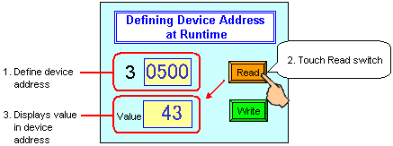
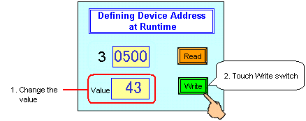

|
|
|
|
|
|
|
|
The sample script is configured to run in the defined operating environment.
|
Target Machine |
Can be set up to run on all target machines. |
|
|
Equipment |
Schneider Electric PLC Modbus (RTU) (Connect the target machine to the CPU Programming Port.) |
|
|
Device Addresses |
30500 to 30514 (15 words) |
|

The following instructions require you to set up the device driver in Vijeo-Designer. See Chapter 5, Communications.
Using a Vijeo-Designer integer array to store device addresses 30500 to 30514, you can define which address you want to read or write to.
The following describes how the application operates at runtime.

Define the device address. (In this example, we use device addresses 30500 to 30514.)
Touch the Read switch.
The value stored in the device address appears in the Data Display part.

Use a keypad to change the value that was read from the device address.
Touch the write switch to write the new value to the device address.